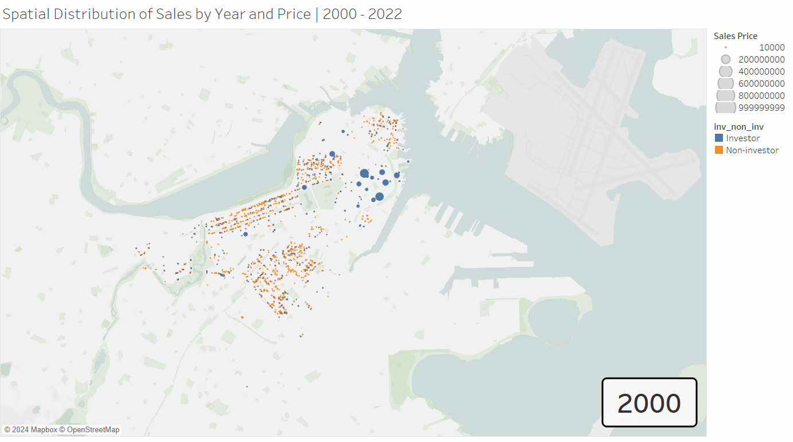
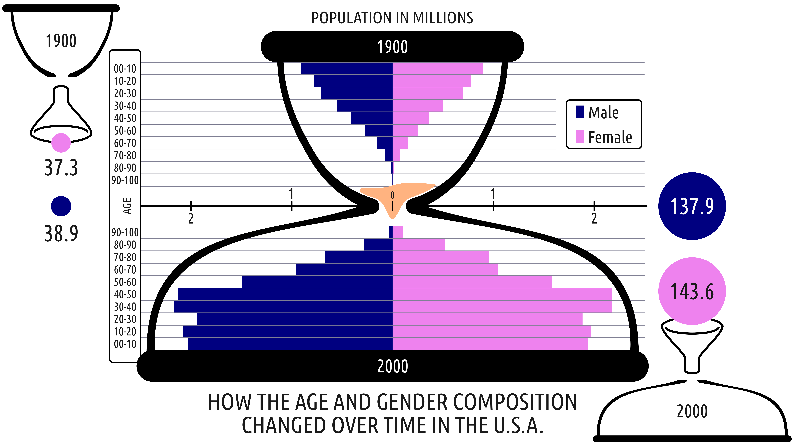

Housing for The Rich

In this data analysis report, we explore the Metropolitan Area Planning Council's (MAPC) dataset on
residential real estate sales in the City of Boston ranging from 2000 to 2023. We find that the
landscape has significantly changed in terms of housing mix, availability, and ownership.
Population

In this data visualization report, we attempt to fabricate and explore data visualizations to answer
out self-posed question of "How did U.S. population age and gender compositions differ between 1900 and 2000?"
We first explored three different sketches and their explanatory power. Following, we created a
professional illustration combining different aspects of the produced sketches.